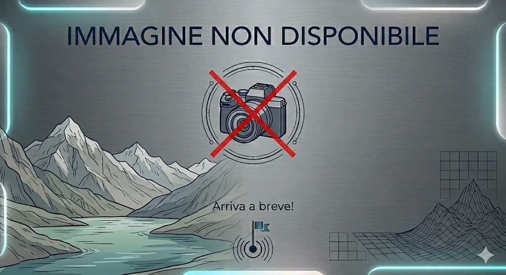

Rifugio Musella (a fianco del rif. Mitta)

- ALTITUDINE: 2.023 m
- TEMPO: 1 ora 15 minuti
- PARTENZA: Diga di Campo Moro
- DISLIVELLO: +200m
- GIRARIFUGI: NO
COME ARRIVARE:
Si parte dalla diga dell'Alpe Gera. Si imbocca il sentiero che si snoda in quota, attraversando il fianco del versante in un suggestivo ambiente d'alta quota. Il percorso si mantiene a quote elevate, offrendo una vista costante sulle vette circostanti, fino ad arrivare nella splendida conca dell'Alpe Musella, dove sorge il rifugio.
COSA MANGIARE:
La cucina propone i piatti tipici della tradizione locale, curati con semplicità. Non mancano mai i classici della gastronomia valtellinese, come pizzoccheri e polenta taragna, perfetti per rifocillarsi in un ambiente accogliente e informale, immersi nel silenzio dell'alpeggio.
COSA VEDERE:
Il rifugio si trova in una posizione incantevole, all'interno di una conca alpina di rara bellezza. È circondato da boschi di larici e vette imponenti, offrendo uno scenario ideale per chi cerca tranquillità. La sua vicinanza ad altri percorsi lo rende un punto di appoggio strategico per esplorare la testata della Valmalenco.